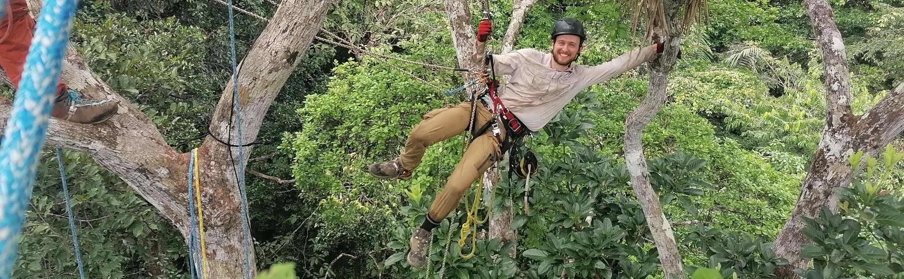

Microclimates slow and alter the direction of climate velocities in tropical forests
Nature Climate Change, 16(1), 95-101.
Tropical Ecologist
Conservation Research Institute & Department of Plant Sciences
University of Cambridge
Working at the interface of ecology, remote sensing, and machine learning
to understand how tropical forests change, respond to disturbance, and maintain biodiversity.

I am a tropical ecologist at the Conservation Research Institute and the Department of Plant Sciences at the University of Cambridge, working within the Forest Ecology and Conservation Group.
My research bridges the spatial scale gap between field plots and satellites by making individual-tree demographic processes observable across landscapes using Earth-observation data. I develop deep learning methods for detecting and mapping individual trees from aerial imagery (detectree2), identify tree species from hyperspectral and multi-temporal observations, and forecast deforestation patterns using convolutional neural networks. Alongside these methodological advances, I apply remote sensing to ecological and conservation questions — from landscape-scale impacts of protected areas to biodiversity modelling with structural lidar products. My fieldwork spans the tropical forests of French Guiana and Sumatra, Indonesia.
Python package for automatic tree crown delineation based on the Detectron2 implementation of Mask R-CNN. Enables accurate identification and mapping of individual trees in tropical forests from aerial RGB imagery.
Microclimates slow and alter the direction of climate velocities in tropical forests
Nature Climate Change, 16(1), 95-101.
Empowering tree-scale monitoring over large areas: Individual tree delineation from high-resolution imagery
ISPRS Journal of Photogrammetry and Remote Sensing, 232, 974-999.
Geoscientific Model Development, 18(16), 5205-5243.
Frontiers in Remote Sensing, 6, 1563430.
The value of local allometries from airborne laser scanning for tropical forest biomass estimates
Peer Community Journal, 5.
ISPRS Open Journal of Photogrammetry and Remote Sensing, 100114.
TESSERA: Temporal Embeddings of Surface Spectra for Earth Representation and Analysis
arXiv preprint arXiv:2506.20380.
Reply to: Causal claims, causal assumptions and protected area impact
Nature, 638(8052), E42-E44.
bioRxiv, 2024.06.24.600405.
Remote Sensing in Ecology and Conservation, 9(5), 641-655.
Landscape-scale benefits of protected areas for tropical biodiversity
Nature, 620, 807–812.
International Journal of Applied Earth Observation and Geoinformation, 123, 103490.
Remote Sensing of Environment, 286, 113442.
Using deep convolutional neural networks to forecast spatial patterns of Amazonian deforestation
Methods in Ecology and Evolution, 13(11), 2622-2634.
IEEE Journal of Selected Topics in Applied Earth Observations and Remote Sensing, 14, 3927-3936.
Protecting biodiversity and economic returns in resource-rich tropical forests
Conservation Biology, 35(1), 263-273.
Measurements of the complex refractive index of volcanic ash at 450, 546.7, and 650 nm
Journal of Geophysical Research: Atmospheres, 120(15), 7747-7757.
Department of Plant Sciences, University of Cambridge (2023)
(2021), Nature. 591, 494

Flux tower above the canopy, Paracou, French Guiana
Undergraduate supervision: Responses to Global Change, Natural Sciences Tripos, Part II, University of Cambridge.
James has given clear and helpful supervisions and essay feedback. He’s instilled a confidence in my essay writing I have never had and I can’t stress how much that has affected my confidence going into my final exams. I feel that I am as well prepared as I could be for not just PL2 but other essay modules as well. His feedback focuses not just on the particular essay question but on essay writing technique for the module in general which has allowed me to improve in my essay writing each week despite changing between lecture series. With James’ supervision I have found myself enjoying writing essays each week!
— Student nomination, Janet Moore Prize 2023
Andrés Zuñiga Gonzalez
MRes (AI4ER, Department of Earth Sciences), University of Cambridge
Sebastian Hickman
MRes (AI4ER, Department of Earth Sciences), University of Cambridge
Katerina Petrova
M4R (Department of Mathematics), Imperial College London
Department of Plant Sciences, University of Cambridge
Natural Environment Research Council
Outstanding overall academic performance, Imperial College London
Department of Plant Sciences, University of Cambridge
Imperial College London
University of Oxford
I am available for consultancy work related to mapping forests and trees through my company forestmap.ai. I apply advanced AI and computer vision techniques to remote sensing data for tropical forest tree detection and monitoring.
Get in touch